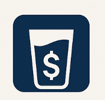

Spendwise
O projektu:
Webová aplikace zaměřená na financial awareness, která umožní uživatelům průběžně sledovat útratu například v restauracích, kavárnách apod. Uživateli bude zobrazovat aktuální útratu, umožní nastavit si rozpočtový limit a další užitečné funkce. Chtěly bychom do projektu zapojit systém OCR, ale možné bude i manuální zadávání položek, které třeba v jídelním lístku nejsou (př. menu dne psané na tabuli) nebo je OCR v takovém formátu nepřečte správně.